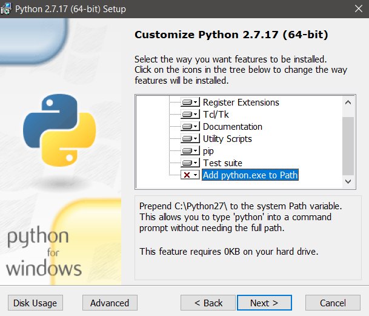
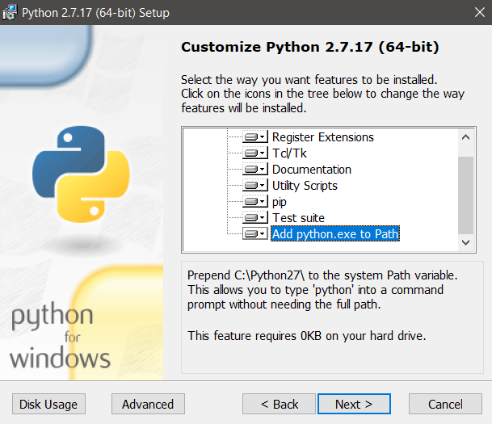

Cartoview¶
Docker¶
Installation Requirements¶
-
Install Python2.7
-
Make Sure to add Python to the Path, as this is not done by default
-
Add python.exe to the PATH
 
-
-
Install Django 1.8.7 , Open Command Prompt then type:
1
pip install django==1.8.7
Docker Users
- You need to install docker-compose
- For Windows Users install
makeby- Installing MSYS2
- Open MSYS2 shell and Install
makeusing this commandpacman -S make - Add
<msys_path>\usr\bintoPATHenvirnment variable
-
Use
Docker Quickstart Terminalto execute the following commands-
Create Cartoview Project which contains required files to run and configure Docker using this command:
1
django-admin.py startproject --template=https://github.com/cartologic/Cartoview-project-template/archive/master.zip --name django.env,uwsgi.ini,.bowerrc,server.py <your_project_name>
-
Replace
<your_project_name>with the desired name -
Go to your project Folder
1
cd <your_project_name>
-
Open
docker-compose.ymland Look at port numbers for GeoServer and PostGIS and change the number before the:this will be the port on your machine
Tips
- Any file with
.envEXTENSION is a file that contains Environment Variables passed to specific container for exampledjango.envfile contains Environment Variables passed to Cartoview container so Django can read these variables and use them - Default database username:
cartologicand password:root - Default database username is in
postgis.envfile in your project if you want to change it. - If you want to run this project with a domain :
- From
django.env(this is a file that contain common django setting variables) file in your Project Folder:1 2 3 4 5
DATABASE_URL=postgres://<database_user_name>:<database_password>@postgis:5432/Cartoview GEOSERVER_PUBLIC_LOCATION=http://<your_domain_or_ip>/geoserver/ GEOSERVER_LOCATION=http://geoserver:8080/geoserver/ SITEURL=http://<your_domain_or_ip> ALLOWED_HOSTS=['*']
- From
- For windows users the default IP aasigned to Docker is :
192.168.99.100so the default django.env file must be something like this:1 2 3 4 5
DATABASE_URL=postgres://<database_user_name>:<database_password>@postgis:5432/Cartoview GEOSERVER_PUBLIC_LOCATION=http://192.168.99.100/geoserver/ GEOSERVER_LOCATION=http://geoserver:8080/geoserver/ SITEURL=http://192.168.99.100 ALLOWED_HOSTS=['*']
Warning
- For windows Users Please Comment volumes lines of postgis Container only in
docker-compose.ymlby preceding the line with#something like this:1 2
# volumes: # - pgdata:/var/lib/postgresql
- if
django-admin.pynot working trydjango-admin
-
-
Start Docker Images(Cartoview,GeoServer,Postgres) type :
1
make run
Success
Now you can Access Cartoview on
http://localhostorhttp://<your_domain_or_ip>Important
Final step Configure GeoServer before uploading layers from Here
Deployment notes¶
-
Important
Once Cartoview is installed it is expected to install all the Apps from the app store automatically Cartoview will not be able to restart Docker when new apps install. After you install any new app or any app update you will need to restart docker manually until this issue is addressed in the future- Follow these steps to get Apps working on nginx
- Collect static files using this commands in your project folder
1
make collect_static
- Restart server now with the following command you should restart server after installing any App
1
docker-compose restart Cartoview
- Collect static files using this commands in your project folder
- Follow these steps to get Apps working on nginx
Windows Issues¶
- Docker volumes have some issues with windows so you have to backup your postgres database.
Docker on Linux¶
- You will Find all postgres data in pgdata folder.